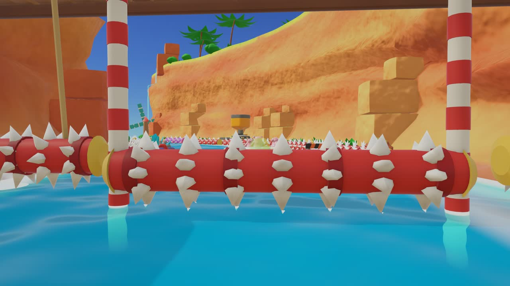
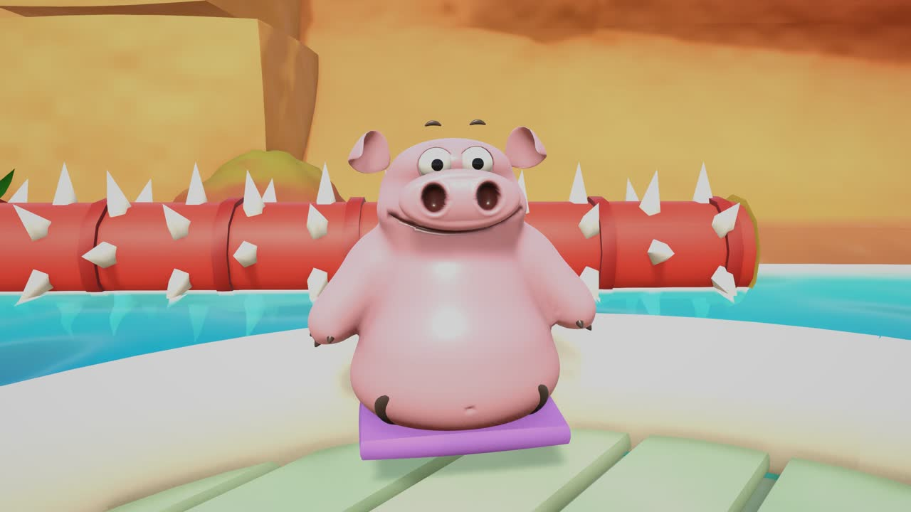
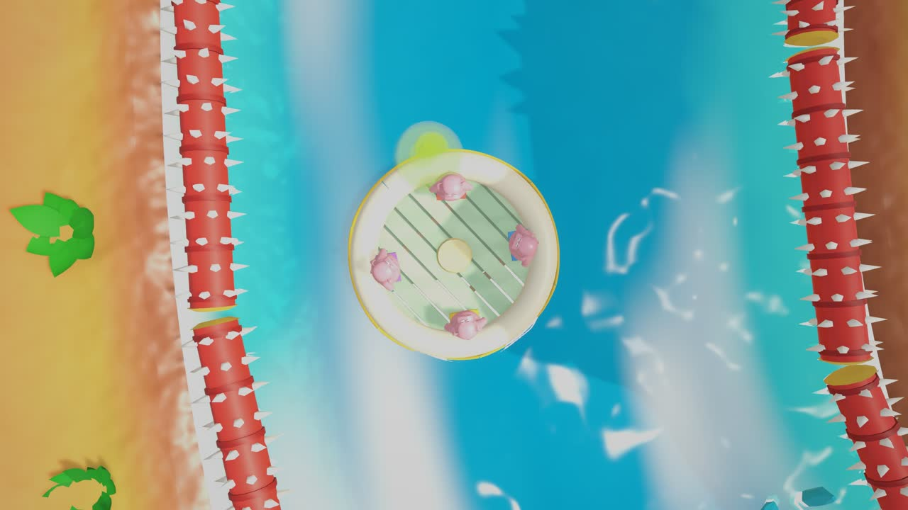
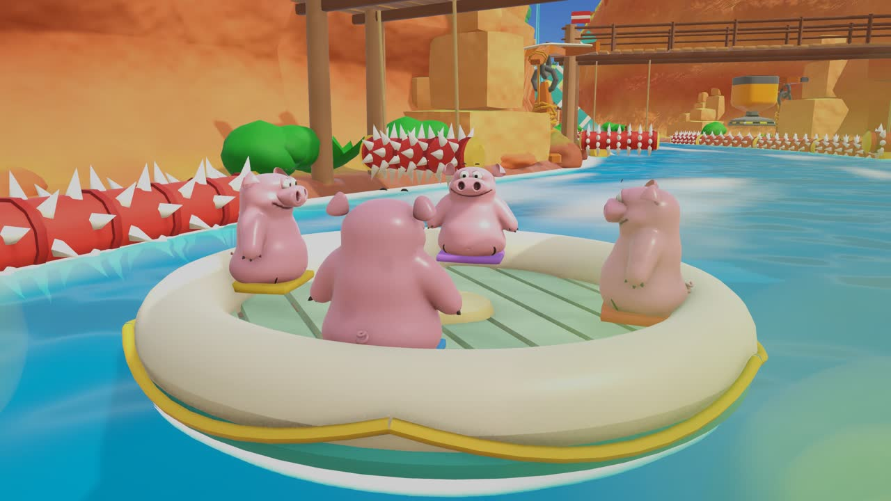
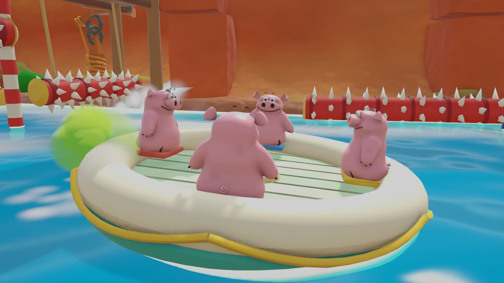
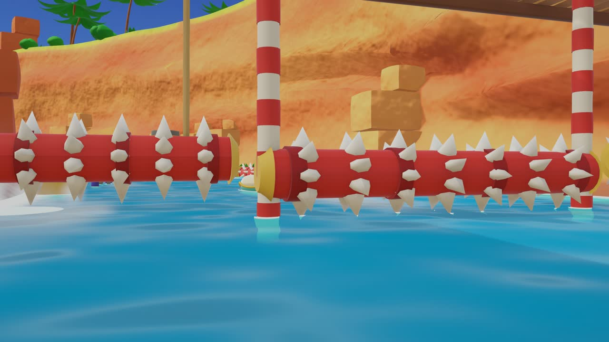

Browser
Nothing to install. Chrome, Edge or Firefox on a computer; phones get on-screen controls.
Play now- Loads about 35 MB the first time, then it's cached
- No voice chat in the browser yet
Free · Browser · Android · Windows
One round raft. An endless river. Everybody farts.
There are no paddles and no engine. You steer by farting: sit at the back to shoot forward, sit on the right to swing left. Touch anything and the run is over.
Same river, same crew on every platform. Online rooms mix browser, Android and Windows players.
Nothing to install. Chrome, Edge or Firefox on a computer; phones get on-screen controls.
Play nowPhones and tablets with Android 8.0 or newer. Plays in landscape, with a thumbstick and a big fart button.
Download APKWindows 10 or 11, 64-bit. The sharpest version, with keyboard, gamepad and voice chat.
Download for WindowsEveryone shares one round raft. Walk around its edge with A and D.
Hold F. Your fart pushes the raft away from you: sit at the back to go forward, on the right to go left.
Spiked banks, swinging logs, mines and gates. One bump ends the run, and the river keeps getting meaner.
| Action | Player 1 | Player 2 | Gamepad |
|---|---|---|---|
| Walk around the rim | A D | Left Right | Stick / D-pad |
| Fart (hold for a stream) | F | Enter | A |
| Charged fart (hold, release) | L-Shift | R-Shift | RT |
| Brake burst | S | Down | B / LT |
| Restart after a crash | R | Backspace | Y |
| Pause | Esc | P | Start |
| Talk (online) | V | – | – |
On a phone: the thumbstick walks you around the rim and the big button farts. Hold TALK to speak online.
Every run builds a fresh river as you go. It twists harder, moves faster and gets crueller the further you get, with a new danger level every 500 metres.






2 to 4 players
2 to 4 players, one screen
Just you
Yes. Every version is free to play, solo or online.
Only for online co-op, so friends can find and invite you. Solo and local co-op work without one.
Yes. Online rooms don't care what you're playing on. Voice chat works on Android and Windows; browser players can still play and hear the game.
There's no iOS app yet. Try the browser version in Safari.
Close other tabs, and use Chrome or Edge with hardware acceleration turned on. On older phones the Android app runs more smoothly.